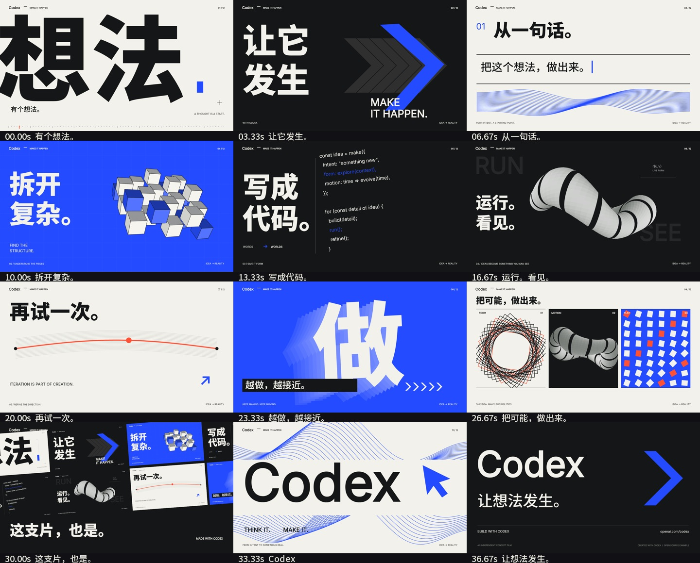

<!doctype html><html lang="zh-CN"><meta charset="utf-8"><meta name="viewport" content="width=device-width,initial-scale=1"><title>Codex · 让想法发生</title>
<style>*{box-sizing:border-box}body{margin:0;background:#f2f1eb;color:#151617;font:15px/1.7 Inter,Arial,'Microsoft YaHei',sans-serif}main{max-width:1320px;margin:auto;padding:38px 32px 70px}header{display:flex;justify-content:space-between;align-items:center;border-bottom:1px solid #b9bbb7;padding-bottom:22px}header strong{font-size:28px;letter-spacing:-1.2px}small{font-size:11px;letter-spacing:1.3px}h1{font-size:clamp(38px,5vw,66px);letter-spacing:-2px;margin:24px 0 6px}p{color:#62645e;margin:0 0 28px}video{display:block;width:100%;background:#151617;aspect-ratio:16/9}nav{display:flex;gap:10px;flex-wrap:wrap;margin:19px 0 32px}button,a{font:inherit;border:1px solid #b9bbb7;color:inherit;background:transparent;padding:9px 16px;text-decoration:none;cursor:pointer}button:hover,a:hover,button.active{color:#fff;background:#244bff;border-color:#244bff}button:focus-visible,a:focus-visible{outline:3px solid #ff5136;outline-offset:3px}.info{display:flex;justify-content:space-between;gap:30px;align-items:baseline}.links{display:flex;gap:10px;flex-wrap:wrap}details{margin-top:32px;border-top:1px solid #b9bbb7;padding-top:20px}summary{cursor:pointer}details img{width:100%;height:auto;margin-top:20px}footer{margin-top:36px;color:#62645e;font-size:12px} @media(max-width:680px){main{padding:22px 16px}.info{display:block}.links{margin-top:20px}header small{max-width:150px;text-align:right}button{padding:7px 10px}}</style>
<main><header><strong>Codex</strong><small>INDEPENDENT CONCEPT FILM · 2026</small></header><h1>让想法发生。</h1><p>40 秒高能动态图形 · 1080p / 60 fps · 本地程序配乐</p>
<video id="film" controls playsinline preload="metadata" poster="frames/frame-35.100.png"><source src="dist/codex-make-it-happen.mp4" type="video/mp4"></video>
<nav id="chapters" aria-label="跳转到镜头"></nav><div class="info"><span id="status">MAKE IT HAPPEN / 00:40</span><div class="links"><a href="dist/codex-make-it-happen.mp4" download>下载 MP4 ↗</a><a href="CODEX-VIDEO-WORKFLOW.md">创作流程 ↗</a><a href="README.md">源工程说明 ↗</a></div></div>
<details><summary>查看全部分镜</summary></details><footer>画面与程序音效由 Codex 编写代码生成；音乐默认由本地代码作曲、合成与混音。独立概念作品。</footer></main>
<script>const v=document.querySelector('video');fetch('timeline.json').then(r=>r.json()).then(t=>{t.scenes.forEach((s,i)=>{const b=document.createElement('button');b.textContent=String(i+1).padStart(2,'0')+' '+s.title;b.addEventListener('click',()=>{v.currentTime=s.start;v.play()});document.querySelector('nav').append(b)});v.addEventListener('timeupdate',()=>{const i=t.scenes.findIndex(s=>v.currentTime>=s.start&&v.currentTime<s.end);document.querySelectorAll('nav button').forEach((b,j)=>b.classList.toggle('active',i===j));document.querySelector('#status').textContent='MAKE IT HAPPEN / '+v.currentTime.toFixed(1)+' s'})});</script></html>
